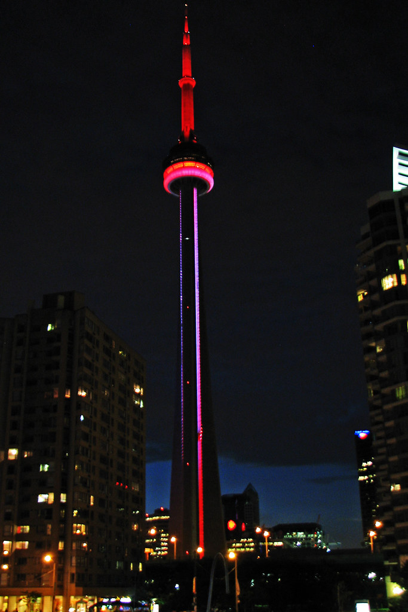

The third tallest tower in the world also known as the CN tower.
The idea to make the CN tower came into the mind of the people at the canadian national railway in 1968 when they wanted to construct a large scale platform for tv and radio communication in the area of toronto. then was finally finished being built in 1972 after the 1570 workers would work 24 hours a day 5 days a week until completion. Now this tower is huge tourist attraction for the people that visit tornnto with a bunch of activities to do. such as the edge walk where you are able to lean off the end of the tower at 1168 feet in the air and many more.
Below is a video on the cn tower and how it was built
Here is an image of the CN tower at night

I made this site because I was able to connect to this topic. how I connected to this topic is from when I went to toronto and went to the CN tower. when I was there I found the CN tower a fun and very enjoybale experince by being able to do many activites such as looking all around toronto at 553m in the air.
Sources for pictures:https://en.wikipedia.org/wiki/CN_Tower
BIBLIOGRAPHIES:
“Fun Facts About the CN Tower.” TripSavvy, TripSavvy, 9 Mar. 2019, www.tripsavvy.com/how-tall-is-the-cn-tower-3251128 1 )what I learned from this site was how tall the CN is with the height of553m .2) I found this was a valid source because this is a travel site so their goal is wanting people to go places so it seems right that they were telling the best things about the cn tower.
Astounding - CN Tower, www.cntower.ca/en-ca/about-us/history/astounding.html. 1 )from this site I learned the background and history of the cn tower including why it was made and some other activities you can do in the cn tower.2) this source is valid to me because it comes from the makers of the CN themselves so the information they give out has to be true.
Ward, Mariellen. “What's so Special about the CN Tower? 3 Top Reasons to Visit.” Breathedreamgo, 3 Feb. 2020, breathedreamgo.com/whats-special-cn-tower/.1 )this website taught me the things about the activities you could do at the cn tower such as edge walk and how it felt as well helping me confirm the height of the cn tower which is 553m 2) I found this source valid because they talk about reasons you should visit the CN stating the best facts about the activities with their goal to get people to visit the CN Tower. As well as how I was able to find the same information of how tall the tower was from another website making me believe their content.